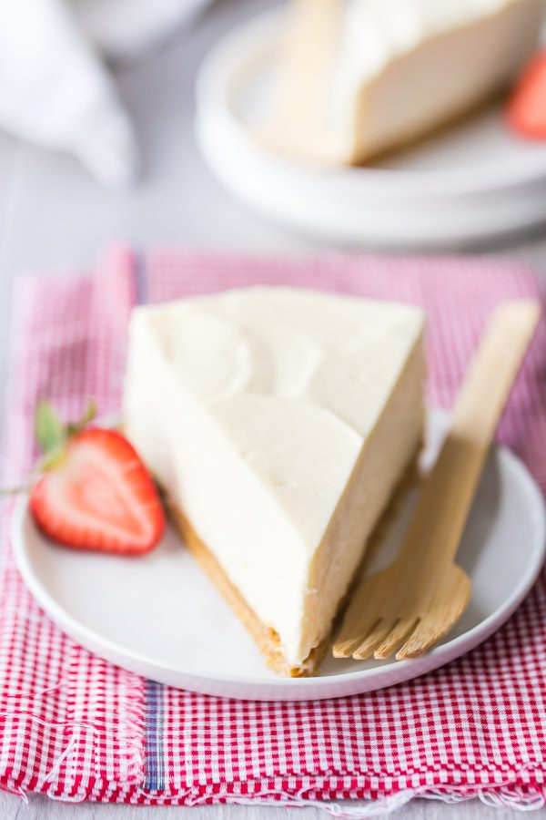

Chocolate Mug Cake
Ingredients:
- 4 tablespoons all-purpose flour
- 2 tablespoons unsweetened cocoa powder
- 3 tablespoons sugar
- 1/4 teaspoon baking powder
- A pinch of salt
- 3 tablespoons milk
- 2 tablespoons vegetable oil (or melted butter)
- 1/4 teaspoon vanilla extract
- 2 tablespoons chocolate chips (optional)
- Ice cream or whipped cream (optional, for serving)
Instructions:
- In a microwave-safe mug, whisk together the flour,
cocoa powder, sugar, baking powder, and a pinch of salt.
- Stir in the milk, vegetable oil, and vanilla extract
until smooth. Make sure there are no lumps.
- Fold in the chocolate chips if you want an extra gooey
chocolatey center.
- Microwave the mug on high for 1 minute and 30 seconds to
2 minutes, depending on your microwave's power. The cake
should rise and be set but still moist in the center. Be
careful not to overcook, as it can dry out quickly.
- Let the mug cake cool for a minute or two before enjoying.
You can top it with a scoop of ice cream, whipped cream,
or a drizzle of chocolate syrup for an extra treat.

Classic Chocolate Chip Cookies
Ingredients:
- 1/2 cup unsalted butter, softened
- 1/2 cup white sugar
- 1/2 cup brown sugar
- 1 egg
- 1 teaspoon vanilla extract
- 1 1/2 cups all-purpose flour
- 1/2 teaspoon baking soda
- 1/2 teaspoon salt
- 1 cup chocolate chips
Instructions:
- Preheat your oven to 350°F (175°C).
- Cream together the butter and sugars until smooth.
Beat in the egg and vanilla.
- In a separate bowl, whisk together the flour, baking
soda, and salt. Gradually mix into the wet ingredients.
- Fold in the chocolate chips.
- Drop spoonfuls of dough onto a baking sheet and bake for
10-12 minutes, or until edges are golden.

No-Bake Cheesecake
Ingredients:
- 1 1/2 cups graham cracker crumbs
- 1/4 cup melted butter
- 2 tablespoons sugar
- 2 cups cream cheese, softened
- 1/2 cup sugar
- 1 teaspoon vanilla extract
- 1 cup heavy whipping cream, whipped
Instructions:
- Mix graham cracker crumbs, melted butter, and 2 tablespoons
of sugar. Press into the bottom of a springform pan.
- Beat cream cheese, 1/2 cup sugar, and vanilla until smooth.
- Gently fold in whipped cream until fully combined.
- Pour mixture over the crust and refrigerate for at least 4
hours or overnight.

Banana Bread
Ingredients:
- 2-3 ripe bananas, mashed
- 1/3 cup melted butter
- 1/2 cup sugar
- 1 egg, beaten
- 1 teaspoon vanilla extract
- 1 teaspoon baking soda
- A pinch of salt
- 1 1/2 cups all-purpose flour
Instructions:
- Preheat your oven to 350°F (175°C). Grease a 4x8-inch loaf pan.
- Mix mashed bananas with melted butter in a mixing bowl.
- Stir in the sugar, egg, and vanilla extract.
- Sprinkle in the baking soda and salt, and mix in the flour.
- Pour the batter into the loaf pan and bake for 60 minutes,
or until a toothpick inserted into the center comes out clean.
Panna Cotta
Ingredients:
- 2 cups heavy cream
- 1/2 cup sugar
- 1 teaspoon vanilla extract
- 1 packet (2 1/4 teaspoons) unflavored gelatin
- 3 tablespoons cold water
Instructions:
- In a small bowl, sprinkle gelatin over cold water and let it sit
for 5 minutes.
- In a saucepan, heat cream and sugar until the sugar dissolves
and the mixture is hot (do not boil).
- Remove from heat and stir in the gelatin until fully
dissolved. Add vanilla extract.
- Pour the mixture into small ramekins and refrigerate
for at least 4 hours, until set.
Fruit Salad with Honey-Lime Dressing
Ingredients:
- 2 cups of mixed fresh fruit (e.g., berries, melon,
grapes, pineapple)
- 2 tablespoons honey
- Juice of 1 lime
- 1 tablespoon chopped fresh mint (optional)
Instructions:
- In a small bowl, whisk together honey and lime juice.
- In a large bowl, combine the mixed fruit.
- Drizzle the honey-lime dressing over the
fruit and toss gently to coat.
- Garnish with chopped mint if desired and
serve chilled.
Rice Pudding
Ingredients:
- 1/2 cup uncooked white rice
- 2 cups milk
- 1/3 cup sugar
- 1 teaspoon vanilla extract
- A pinch of salt
- Cinnamon for sprinkling (optional)
Instructions:
- In a medium saucepan, bring 1 1/2 cups of water to a boil.
Stir in the rice and reduce heat to low. Cover and simmer for
20 minutes.
- In a separate saucepan, combine the cooked rice, milk,
sugar, and salt. Cook over medium heat until creamy, about 15-20 minutes.
- Remove from heat and stir in vanilla extract.
- Serve warm or chilled, sprinkled with cinnamon if desired.